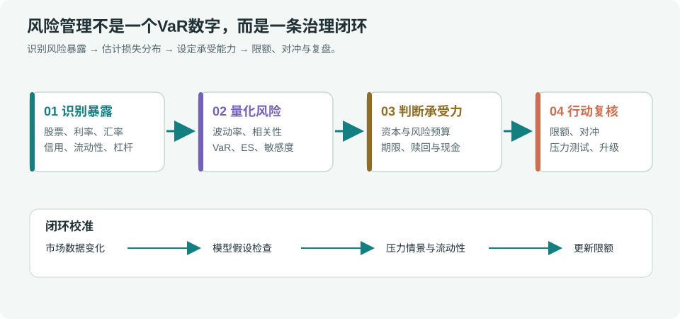
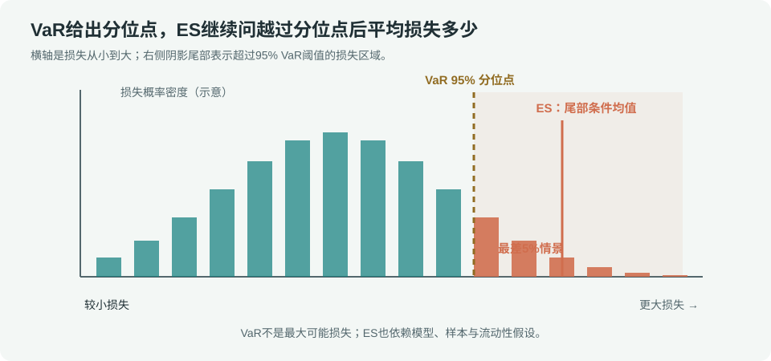
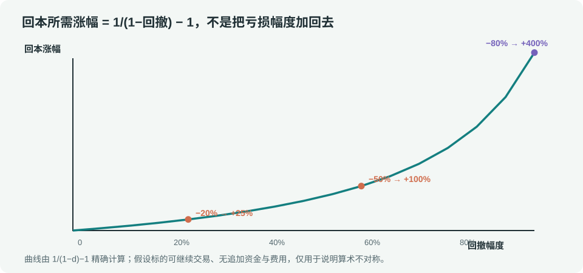

CHAPTER 16 · EVIDENCE-BASED INVESTING
风险管理：VaR、ES、回撤与仓位预算
从损失分布、尾部风险、净值回撤到仓位管理和止损执行，建立可触发行动的投资风险治理体系。
风险管理从损失分布开始，而不是从“止损百分比”开始
假设一个组合昨天收盘价值100万元，今天可能亏损0.5%、1.5%或5%。只说“风险是1.5%”并没有说明这是波动率、某个分位点、最大回撤，还是压力情景。专业风险管理先定义风险对象、持有期限、损失口径和概率模型，再讨论一个数字如何用于决策。
市场风险来自价格、利率、汇率、波动率和相关性变化；信用风险来自交易对手不能履约；流动性风险来自无法在合理成本下退出；杠杆与融资风险会把价格波动转化为追加保证金或被迫卖出。它们可能互相放大，不能把风险管理缩减成一条技术止损线。

VaR与ES：分位点和尾部平均是两个不同问题
在置信水平α、持有期h下，VaR是损失分布的α分位点：若95%单尾VaR为2.5万元，含义是在模型假设成立时，损失超过该值的概率约为5%。它不是最大可能损失，也没有告诉我们那最差5%会平均亏多少。
Expected Shortfall（ES，也称条件风险价值CVaR）关注超过VaR阈值后的尾部平均损失。Basel市场风险内部模型框架采用97.5%单尾ES作为监管资本计算的核心风险度量之一；这是银行监管框架，不意味着个人账户应该照搬同一个置信水平。

参数化VaR实验：改变仓位、波动率、置信水平与持有期
教学设定：组合名义价值100万元，日波动率1.5%，收益均值为零，日收益服从正态分布，置信水平95%，持有期1日。此时VaR约24,672.80元，ES约30,940.69元。把置信水平提高到99%，尾部阈值会更远；把持有期扩大到10日则按平方根时间近似放大，但这不适用于波动聚集、跳跃和流动性枯竭的所有情况。
参数化、历史模拟和蒙特卡洛模拟各有输入依赖。历史模拟能保留历史冲击形状，却对样本窗口和极端事件覆盖敏感；蒙特卡洛能组合复杂风险因子，但模拟分布和相关结构仍需验证。VaR回测可检查例外次数，不能证明模型永远正确。
最大回撤与恢复收益：跌20%不等于涨20%就回来
净值曲线在每个时点t的历史高水位是此前最大净值。最大回撤（MDD）是从历史峰值到其后谷底的最大相对跌幅。若净值由125降至90，回撤为(125−90)/125=28%。从90回到125，需要上涨(125/90−1)=38.9%，而不是28%。

仓位管理：先决定可承受损失，再反推头寸规模
一个简单的风险预算框架是：每笔交易的计划风险预算=账户净值×风险预算比例；初始名义头寸≈风险预算/（入场价与计划止损价之间的相对距离）。若账户100万元、计划风险预算0.5%、止损距离5%，名义头寸约10万元。该结果只在止损成交价格接近触发价时成立；跳空、停牌、涨跌停、滑点与流动性不足会让实际亏损更大。
凯利公式在已知胜率p、赔率b且收益分布满足模型时，二元下注的最优财富比例为f*=(bp−q)/b，q=1−p。若p=55%、赢时净赚1倍、输时亏1倍，则f*=10%；半凯利为5%。但p与b本身是估计量，估计误差、相关头寸、连续亏损和融资约束会令全凯利极其激进。它是模型基准，不是自动适用的仓位建议。
止损单不是保证成交价的保险
止损规则可在价格触发后减少继续暴露的风险，但“触发价”与“成交价”不同。SEC投资者公告说明，普通stop order触发后转为市价单，成交价可能明显偏离触发价；stop-limit则限制成交价格，却可能在市场快速下跌时完全无法成交。不同券商、交易所和证券品种可用订单类型不同。
因此，风险预算应把隔夜跳空、流动性折价、价格限制和订单队列纳入压力测试。止损也不能替代对基本面变化、投资期限和组合相关性的判断。若一只证券的止损距离被设得很窄，但日常噪声和价差本来就很大，策略可能反复被触发并承担高额交易成本。
压力测试：模型没见过的路径也必须进入讨论
压力测试不是预测某一天必然发生什么，而是问：“若某些变量同时发生不利变化，组合是否还能履行资金义务？”可构造历史情景（利率急升、汇率贬值、行业信用事件）、假设情景（相关性突然上升、市场深度下降）、反向压力测试（什么组合冲击会让净值跌破资本底线）。
压力测试要把价格冲击、保证金、融资折扣、赎回、交易容量和对冲基差联结起来。危机期间相关系数可能上升，历史波动率也可能低估跳跃损失；对无法可靠建模的风险应设置保守限额，而不是伪造精确的VaR。
风险报告应能触发行动，也应允许模型被质疑
有效的风险治理至少明确：谁拥有风险、谁能批准限额例外、超限如何升级、数据多久更新、模型如何验证、压力结果如何进入资金计划。风险报告同时展示VaR、ES、回撤、集中度、杠杆、流动性和情景损失，避免一个指标掩盖另一类风险。
检查题
- 95% VaR为2.5万元，为什么不能说最大损失是2.5万元？
- 若净值从125降到90，回撤和恢复到125所需涨幅分别是多少？
- 为什么stop-limit可能不成交，普通stop可能以明显偏离触发价的价格成交？
- 在正态参数模型中，ES比VaR多回答了什么？
参考资料与适用范围
引用资料用于核对定义、理论或研究设计。学术研究的样本和市场范围不自动适用于其他市场；本章计算器和图表中的数值均为构造示例。